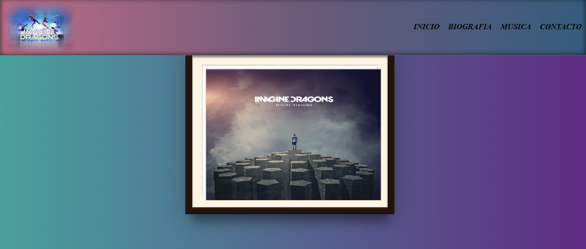
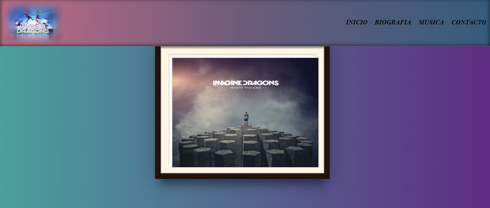

Proyectos Recientes

Primer proyecto en conjunto
Una iniciativa como primera actividad grupal una pagina fan del grupo Imagine Dragons
Esta es una breve muestra de mis proyectos y cómo puedo ayudar a mis clientes a mejorar en su desarrollo y crecimiento web.
Una iniciativa como primera actividad grupal una pagina fan del grupo Imagine Dragons
